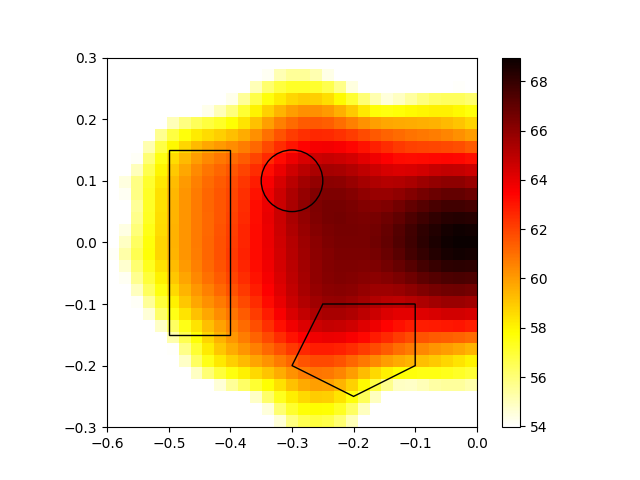
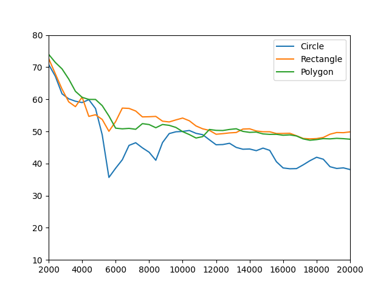
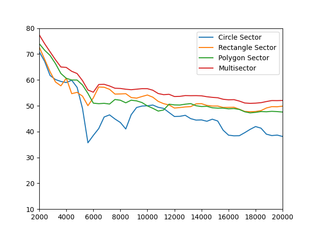

Note
Go to the end to download the full example code.
Sector Integration Example¶
Loads the example data set, sets diffrent Sectors for intergration. Shows Acoular’s Sector und Sound Pressure level Integration functionality.
import urllib
from pathlib import Path
import acoular as ac
import matplotlib.pyplot as plt
import numpy as np
from matplotlib.patches import Polygon, Rectangle
time_data_file = Path('../data/example_data.h5')
if not time_data_file.exists():
time_data_file = Path().cwd() / 'example_data.h5'
if not time_data_file.exists():
print('Cannot find example_data.h5 file. Downloading...')
url = 'https://github.com/acoular/acoular/tree/master/examples/data/example_data.h5'
time_data_file, _ = urllib.request.urlretrieve(url, time_data_file)
print(f'Time data file location: {time_data_file}')
Define the necessary objects
micgeofile = Path(ac.__file__).parent / 'xml' / 'array_56.xml'
mg = ac.MicGeom(from_file=micgeofile)
ts = ac.TimeSamples(name=time_data_file)
ps = ac.PowerSpectra(source=ts, block_size=128, window='Hanning')
rg = ac.RectGrid(x_min=-0.6, x_max=-0.0, y_min=-0.3, y_max=0.3, z=0.68, increment=0.02)
st = ac.SteeringVector(grid=rg, mics=mg)
f = ac.PowerSpectra(source=ts, block_size=128)
bf = ac.BeamformerBase(freq_data=f, steer=st)
Integrate function can deal with multiple methods for integration:
a circle containing of three values: x-center, y-center and radius
circle = np.array([-0.3, -0.1, 0.05])
a rectangle containing of 4 values: lower corner(x1, y1) and upper corner(x2, y2).
rect = np.array([-0.5, -0.15, -0.4, 0.15])
a polygon containing of vector tuples: x1,y1,x2,y2,…,xi,yi
poly = np.array([-0.25, -0.1, -0.1, -0.1, -0.1, -0.2, -0.2, -0.25, -0.3, -0.2])
4th alternative: define those sectors as Classes
circle_sector = ac.CircSector(x=-0.3, y=-0.1, r=0.05)
rect_sector = ac.RectSector(x_min=-0.5, x_max=-0.4, y_min=-0.15, y_max=0.15)
acoular.grids.PolySector is a class that takes a list of points as input
list of points containing x1,y1,x2,y2,…,xi,yi
poly_sector = ac.PolySector(edges=[-0.25, -0.1, -0.1, -0.1, -0.1, -0.2, -0.2, -0.25, -0.3, -0.2])
The acoular.grids.MultiSector class allows to sum over multiple different sectors
multi_sector = ac.MultiSector(sectors=[circle_sector, rect_sector, poly_sector])
Two integration variants exist (with same outcome): 1. use Acoular’s integrate function. Integrate SPL values from beamforming results using the shapes
levels_circ = ac.integrate(bf.result[:], rg, circle)
levels_rect = ac.integrate(bf.result[:], rg, rect)
levels_poly = ac.integrate(bf.result[:], rg, poly)
[('example_data_cache.h5', 18)]
[('example_data_cache.h5', 19)]
integrate SPL values from beamforming results using sector classes
levels_circ_sector = ac.integrate(bf.result[:], rg, circle_sector)
levels_rect_sector = ac.integrate(bf.result[:], rg, rect_sector)
levels_poly_sector = ac.integrate(bf.result[:], rg, poly_sector)
levels_multi_sector = ac.integrate(bf.result[:], rg, multi_sector)
2. use beamformers integrate function (does not require explicit assignment of grid object). Integrate SPL values from beamforming results using the shapes
levels_circ = bf.integrate(circle)
levels_rect = bf.integrate(rect)
levels_poly = bf.integrate(poly)
integrate SPL values from beamforming results using sector classes
levels_circ_sector = bf.integrate(circle_sector)
levels_rect_sector = bf.integrate(rect_sector)
levels_poly_sector = bf.integrate(poly_sector)
levels_multi_sector = bf.integrate(multi_sector)
Plot map and sectors
from pylab import cm, colorbar, figure, imshow, legend, plot, show, xlim, ylim
figure()
map = bf.synthetic(2000, 1)
mx = ac.L_p(map.max())
imshow(ac.L_p(map.T), origin='lower', vmin=mx - 15, interpolation='nearest', extent=rg.extend(), cmap=cm.hot_r)
colorbar()
circle1 = plt.Circle((-0.3, 0.1), 0.05, color='k', fill=False)
plt.gcf().gca().add_artist(circle1)
polygon = Polygon(poly.reshape(-1, 2), color='k', fill=False)
plt.gcf().gca().add_artist(polygon)
rect = Rectangle((-0.5, -0.15), 0.1, 0.3, linewidth=1, edgecolor='k', facecolor='none')
plt.gcf().gca().add_artist(rect)
# calculate the discrete frequencies for the integration
fftfreqs = np.arange(128 / 2 + 1) * (51200 / 128)
# plot from shapes
figure()
plot(fftfreqs, ac.L_p(levels_circ))
plot(fftfreqs, ac.L_p(levels_rect))
plot(fftfreqs, ac.L_p(levels_poly))
xlim([2000, 20000])
ylim([10, 80])
legend(['Circle', 'Rectangle', 'Polygon'])
# plot from sector classes
figure()
plot(fftfreqs, ac.L_p(levels_circ_sector))
plot(fftfreqs, ac.L_p(levels_rect_sector))
plot(fftfreqs, ac.L_p(levels_poly_sector))
plot(fftfreqs, ac.L_p(levels_multi_sector))
xlim([2000, 20000])
ylim([10, 80])
legend(['Circle Sector', 'Rectangle Sector', 'Polygon Sector', 'Multisector'])
show()
- 
- 
- 
Total running time of the script: (0 minutes 0.624 seconds)